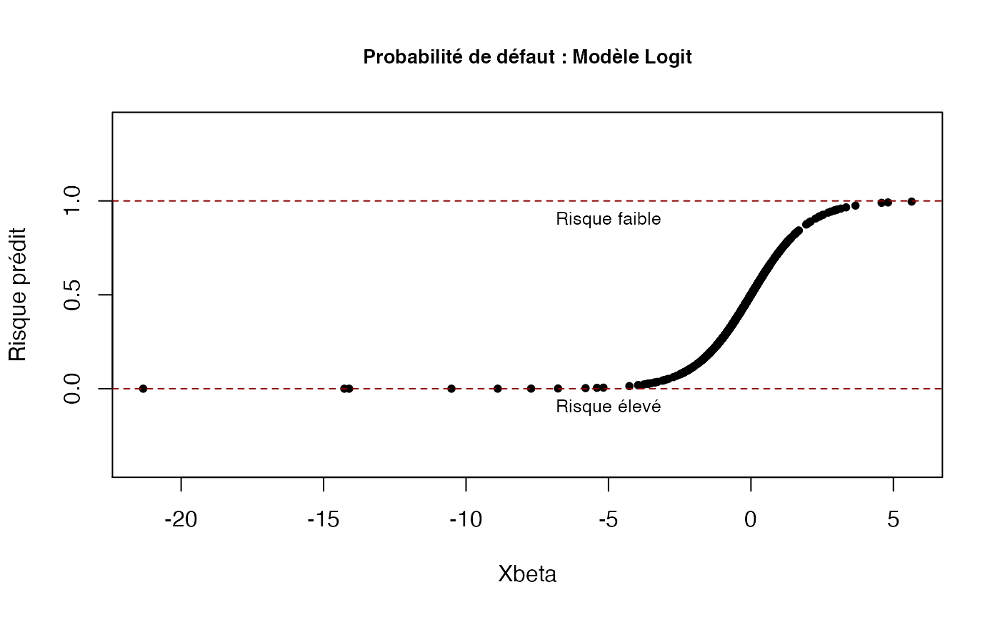
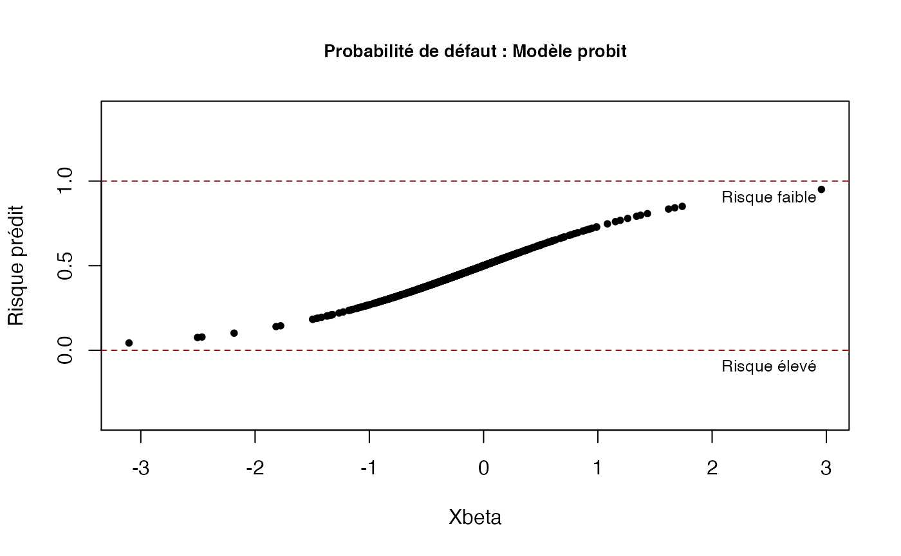

Chapitre 12. Introduction aux modèles logit et probit.
Tout le code avec R.
Gilles Dufrenot
2021-08-07
Source:vignettes/CodeChap12.Rmd
CodeChap12.Rmd

|
|
Application pratique. Estimation d’un modèle logit/probit non-ordonné avec R
Remarques préliminaires
- Ne pas tenir compte des warnings qui n’affectent pas les résultats.
- Si vous rencontrez des problèmes de convergence sur un modèle, alors pensez à modifier votre jeu de variables explicatives
Que veut-on faire ?
On souhaite estimer un modèle logit ou probit pour étudier les déterminants du risque de défaut des entreprises à partir d’un échantillon.
La variable endogène est une variable binaire appelée Defaut et les variables explicatives sont :
- le taux de marge :
Marge; - le bénéfice avant impôt:
Benef; - le ratio de liquidité:
Liquid.
Etape 1 : Lecture des données et statistiques élémentaires
Lecture des données
if(!("sageR" %in% installed.packages())){install.packages("sageR")}
library(sageR)
data(bilan)La commande View permet de voir ce qu’il y a dans les données : nom des variables, nature des variables, chiffres, caractères, etc.
View(bilan)Origine des données
Les données de la base sont issues de Bloomberg. On s’intéresse au risque d’insolvabilité de 1 060 entreprises cotées en bourse, durant l’année 2018, et appartenant à divers secteurs d’activité. Cette problématique est importante pour les investisseurs sur les marchés de capitaux internationaux qui prêtent aux entreprises, notamment en devenant actionnaires. L’information sur les risques financiers des entreprises est généralement fournie par des agences de notation : S&P, Fitch et Moody’s. Dans la base, nous retenons les notations attribuées par S&P aux entreprises
Elles portent sur une évaluation du risque de défaut (le fait que l’entreprise ayant emprunté des fonds se retrouve un jour en incapacité de rembourser), et les notes vont de AAA à CCC-. La grille de notation est la suivante :
- AAA est la note la plus élevée et correspond à une sécurité maximale pour un investisseur qui détiendrait des parts dans l’entreprise concernée par la note. Le risque de défaut est quasiment nul.
- AA+, AA et AA- correspondent à une sécurité haute ou bonne (le risque de défaut est faible).
- A+, A et A- correspondent à une qualité moyenne supérieure ; BBB+, BBB et BBB- à une qualité moyenne inférieure.
- Puis, nous avons un ensemble de notes classant les actifs des entreprises dans la catégorie spéculative, c’est-à-dire suffisamment risquéede telle sorte que le détenteur des parts de l’entreprise peut s’attendre à un défaut avec une probabilité forte (BB+, BB,…, B-).
- Enfin, une dernière catégorie de notes correspond à des actifs pour lesquels le risque de défaut est très élevé : CCC+, CCC, CCC-, D).
Pour nos entreprises, les notes figurent dans la colonne du tableau 1 intitulée SP (dernière colonne). La variable SP est qualitative et polytomique (puisqu’elle peut prendre plus de deux modalités). Pour la transformer en une variable quantitative dichotomique, nous allons supposer que les agences de notation veulent envoyer un signal clair aux investisseurs, en différenciant les entreprises qui sont en bonne santé des autres.
Pour ce faire, chaque fois que la note sera supérieure à BB+, nous attribuons la valeur 1 à l’observation (entreprises en bonne santé présentant un risque de défaut ou de défaillance faible). Et pour toute note inférieure à BB+, nous attribuons la valeur 0 (entreprises en mauvaise santé présentant un risque de défaut élevé). Nous appelons la nouvelle variable Risque. Notons que le critère utilisé ici est arbitraire et un autre découpage pourrait être retenu. Voir les colonnes intitulées Risque et Défaut.
La colonne Défaut2 correspond à un autre classement des entreprises, en les hiérarchisant des plus performantes aux moins performantes:
- pour les entreprises ayant une notation comprise entre AAA et A- (de première qualité à qualité moyenne supérieure) ;
- pour les entreprises ayant une notation comprise entre BBB+ à BBB- (qualité moyenne inférieure) ;
- pour les entreprises ayant une notation comprise inférieure à BBB- (un investisseur achetant des actifs de ces entreprises devrait les considérées comme spéculatifs ou incorporant un risque de défaut élevé).
Variables explicatives
Dans la base de données, nous avons retenu des variables qui sont habituellement liées aux performances des entreprises :
- Liquid : un ratio de liquidité, mesuré par le rapport entre l’actif circulant et l’exigible à court terme. Cette variable capte le risque de liquidité, c’est-à-dire l’incapacité des entreprises à rembourser des dettes exigibles à court terme (moins d’un an).
- ROE : le ratio du résultat net sur les capitaux propres. C’est une mesure de la rentabilité des capitaux investis par les actionnaires de l’entreprise.
- Marge : la marge bénéficiaire nette en pourcentage, c’est-à-dire la part du chiffre d’affaires que l’entreprise conserve après paiement de ses frais d’exploitation, des remboursements d’intérêt et du paiement de ses impôts.
- OPM : la marge opérationnelle définie comme le ratio du résultat d’exploitation et du chiffre d’affaires.
Il s’agit de mesurer la performance économique de l’entreprise et donc sa viabilité à moyen/long terme.
En plus de ces variables qui renseignent sur des indicateurs de fonctionnement de l’entreprise, il est important de s’intéresser à des éléments ayant un impact direct sur leurs dettes. Trois indicateurs sont retenus ici :
- Benef : le bénéfice avant intérêt, impôts et amortissement. Cette variable est un indicateur du profit de l’entreprise.
- Net : le ratio des dettes financières sur Benef. Il s’agit de mesurer la capacité d’une entreprise à rembourser ses dettes en utilisant ses profits.
- Roul : le besoin en fonds de roulement. Il s’agit de la somme à mettre de côté pour pouvoir payer ses charges. C’est un indicateur d’autonomie financière de l’entreprise.
Statistiques élémentaires
Quelques statistiques descriptives du fichier de données
summary(bilan)
#> Entreprise id ROE OPM
#> Length:1060 Min. : 1.0 Min. :-122.560 Min. :-220.43
#> Class :character 1st Qu.: 265.8 1st Qu.: 6.213 1st Qu.: 5.75
#> Mode :character Median : 530.5 Median : 12.985 Median : 11.62
#> Mean : 530.5 Mean : 17.052 Mean : 14.21
#> 3rd Qu.: 795.2 3rd Qu.: 21.488 3rd Qu.: 19.71
#> Max. :1060.0 Max. : 546.520 Max. : 338.70
#> Marge Net Benef Liquid
#> Min. :-74.090 Min. :-19.380 Min. :-106.580 Min. : 0.00
#> 1st Qu.: 3.667 1st Qu.: 1.070 1st Qu.: 1.840 1st Qu.: 54.75
#> Median : 8.030 Median : 2.385 Median : 4.795 Median : 86.00
#> Mean : 9.621 Mean : 3.852 Mean : 9.800 Mean :102.31
#> 3rd Qu.: 14.023 3rd Qu.: 4.213 3rd Qu.: 9.620 3rd Qu.:121.00
#> Max. : 99.970 Max. :369.000 Max. : 609.090 Max. :788.00
#> Roul SP...10 Risque Défaut
#> Min. : 0.230 Length:1060 Min. :0.0000 Length:1060
#> 1st Qu.: 4.327 Class :character 1st Qu.:0.0000 Class :character
#> Median : 6.640 Mode :character Median :1.0000 Mode :character
#> Mean : 12.251 Mean :0.5755
#> 3rd Qu.: 11.227 3rd Qu.:1.0000
#> Max. :400.670 Max. :1.0000
#> Défaut2 SP...14
#> Length:1060 Length:1060
#> Class :character Class :character
#> Mode :character Mode :character
#>
#>
#> La variable endogène est une chaîne de caractères, qui est convertie en facteur, puis affichée
La commande freq permet d’afficher la proportion de chaque modalité, i.e. risque de défaut faible et risque de défaut important (fort).
if(!("questionr" %in% installed.packages())){install.packages("questionr")}
library(questionr)
freq(titi)
#> n % val%
#> Faible 610 57.5 57.5
#> Fort 450 42.5 42.5Etape 2 : Régression logistique
if(!("labelled" %in% installed.packages())){install.packages("labelled")}
library(labelled)
var_label(titi) <- "Risque de défaut"
var_label(bilan$Marge) <- "Taux de marge"
var_label(bilan$Benef) <- "Bénéfice"
var_label(bilan$Liquid) <- "Ratio de liquidité"Affichage des résultats de la régression logistique
La fonction stargazer permet d’afficher les résultats dans un tableau. Elle peut se substituer à la commande logit écrite à la suite de l’instruction glm qui affiche les résultats « bruts ».
if(!("stargazer" %in% installed.packages())){install.packages("stargazer")}
library(stargazer)
#>
#> Please cite as:
#> Hlavac, Marek (2018). stargazer: Well-Formatted Regression and Summary Statistics Tables.
#> R package version 5.2.2. https://CRAN.R-project.org/package=stargazer
stargazer(logit, type="text")
#>
#> =============================================
#> Dependent variable:
#> ---------------------------
#> titi
#> ---------------------------------------------
#> Marge -0.053***
#> (0.008)
#>
#> Benef -0.036***
#> (0.007)
#>
#> Liquid 0.006***
#> (0.001)
#>
#> Constant -0.209
#> (0.129)
#>
#> ---------------------------------------------
#> Observations 1,060
#> Log Likelihood -643.728
#> Akaike Inf. Crit. 1,295.457
#> =============================================
#> Note: *p<0.1; **p<0.05; ***p<0.01Pour des résulats au format html.
stargazer(logit, type="html")| Dependent variable: | |
| titi | |
| Marge | -0.053*** |
| (0.008) | |
| Benef | -0.036*** |
| (0.007) | |
| Liquid | 0.006*** |
| (0.001) | |
| Constant | -0.209 |
| (0.129) | |
| Observations | 1,060 |
| Log Likelihood | -643.728 |
| Akaike Inf. Crit. | 1,295.457 |
| Note: | p<0.1; p<0.05; p<0.01 |
Pour des résulats au format html enregistrés dans le fichier logit.htm.
stargazer(logit, type="html", out="logit.htm")Coefficients du modèle et intervalles de confiance
exp(cbind(coef(logit), confint(logit)))
#> Waiting for profiling to be done...
#> Warning: glm.fit: fitted probabilities numerically 0 or 1 occurred
#> Warning: glm.fit: fitted probabilities numerically 0 or 1 occurred
#> 2.5 % 97.5 %
#> (Intercept) 0.8117272 0.6301121 1.0439339
#> Marge 0.9481258 0.9336748 0.9619427
#> Benef 0.9650274 0.9511466 0.9774838
#> Liquid 1.0064010 1.0044449 1.0084702Odds ratio
if(!("questionr" %in% installed.packages())){install.packages("questionr")}
library(questionr)
odds.ratio(logit)
#> Waiting for profiling to be done...
#> Warning: glm.fit: fitted probabilities numerically 0 or 1 occurred
#> Warning: glm.fit: fitted probabilities numerically 0 or 1 occurred
#> OR 2.5 % 97.5 % p
#> (Intercept) 0.81173 0.63011 1.0439 0.105
#> Marge 0.94813 0.93367 0.9619 2.514e-12 ***
#> Benef 0.96503 0.95115 0.9775 3.344e-07 ***
#> Liquid 1.00640 1.00444 1.0085 3.858e-10 ***
#> ---
#> Signif. codes: 0 '***' 0.001 '**' 0.01 '*' 0.05 '.' 0.1 ' ' 1
if(!("gtsummary" %in% installed.packages())){install.packages("gtsummary")}
library(gtsummary)
tbl_regression(logit, exponentiate = TRUE)
#> Warning: glm.fit: fitted probabilities numerically 0 or 1 occurred
#> Warning: glm.fit: fitted probabilities numerically 0 or 1 occurred| Characteristic | OR1 | 95% CI1 | p-value |
|---|---|---|---|
| Taux de marge | 0.95 | 0.93, 0.96 | <0.001 |
| Bénéfice | 0.97 | 0.95, 0.98 | <0.001 |
| Ratio de liquidité | 1.01 | 1.00, 1.01 | <0.001 |
|
1
OR = Odds Ratio, CI = Confidence Interval
|
|||
NB : Les commandes précédentes montrent deux manières d’afficher les coefficients et les intervalles de confiance.
- Dans un cas on effectue une concaténation de deux tableaux (coefficients et intervalle de confiance).
- La fonction
odds.ratiopermet d’ajouter les \(p\)-values (niveau de significativité) et donnent des indications sur la significativité des coefficients estimés. - On peut également afficher le nom des variables. Il faut au préalable déclarer un label pour les variables grâce à la fonction
var_label. Comme on peut le remarquer au lieu deMarge,Benef,Liquid, le tableau affiche les labels que nous avons déclarés pour chacune de ces variables, i.e. Taux de marge, Bénéfice et Ratio de Liquidité.
Etape 3: Calcul des effets marginaux du modèle logit
Les effets marginaux sont obtenus par la fonction logitmfx. En plus des effets marginaux eux-mêmes, les \(z\)-ratios sont affichés ainsi que les \(p\)-values.
if(!("mfx" %in% installed.packages())){install.packages("mfx")}
library(mfx)
#> Le chargement a nécessité le package : sandwich
#> Le chargement a nécessité le package : lmtest
#> Le chargement a nécessité le package : zoo
#>
#> Attachement du package : 'zoo'
#> The following objects are masked from 'package:base':
#>
#> as.Date, as.Date.numeric
#> Le chargement a nécessité le package : MASS
#>
#> Attachement du package : 'MASS'
#> The following object is masked from 'package:gtsummary':
#>
#> select
#> Le chargement a nécessité le package : betareg
logitmfx(titi ~ Marge + Benef + Liquid, data=bilan)
#> Call:
#> logitmfx(formula = titi ~ Marge + Benef + Liquid, data = bilan)
#>
#> Marginal Effects:
#> dF/dx Std. Err. z P>|z|
#> Marge -0.01275408 0.00182150 -7.0020 2.524e-12 ***
#> Benef -0.00852348 0.00163426 -5.2155 1.833e-07 ***
#> Liquid 0.00152771 0.00024476 6.2416 4.331e-10 ***
#> ---
#> Signif. codes: 0 '***' 0.001 '**' 0.01 '*' 0.05 '.' 0.1 ' ' 1Etape 4 : Graphiques des odds ratios
Il est possible de fournir un graphique des odds ratios en utilisant la fonction ggplot.
if(!("broom" %in% installed.packages())){install.packages("broom")}
library(broom)
tidy(logit, conf.int = TRUE, exponentiate = TRUE)
#> Warning: glm.fit: fitted probabilities numerically 0 or 1 occurred
#> Warning: glm.fit: fitted probabilities numerically 0 or 1 occurred
#> # A tibble: 4 x 7
#> term estimate std.error statistic p.value conf.low conf.high
#> <chr> <dbl> <dbl> <dbl> <dbl> <dbl> <dbl>
#> 1 (Intercept) 0.812 0.129 -1.62 1.05e- 1 0.630 1.04
#> 2 Marge 0.948 0.00761 -7.00 2.51e-12 0.934 0.962
#> 3 Benef 0.965 0.00698 -5.10 3.34e- 7 0.951 0.977
#> 4 Liquid 1.01 0.00102 6.26 3.86e-10 1.00 1.01
tmp <- tidy(logit, conf.int = TRUE, exponentiate = TRUE)
#> Warning: glm.fit: fitted probabilities numerically 0 or 1 occurred
#> Warning: glm.fit: fitted probabilities numerically 0 or 1 occurred
str(tmp)
#> tibble [4 × 7] (S3: tbl_df/tbl/data.frame)
#> $ term : chr [1:4] "(Intercept)" "Marge" "Benef" "Liquid"
#> $ estimate : num [1:4] 0.812 0.948 0.965 1.006
#> $ std.error: num [1:4] 0.12868 0.00761 0.00698 0.00102
#> $ statistic: num [1:4] -1.62 -7 -5.1 6.26
#> $ p.value : num [1:4] 1.05e-01 2.51e-12 3.34e-07 3.86e-10
#> $ conf.low : num [1:4] 0.63 0.934 0.951 1.004
#> $ conf.high: num [1:4] 1.044 0.962 0.977 1.008
if(!("ggplot2" %in% installed.packages())){install.packages("ggplot2")}
library(ggplot2)
ggplot(tmp) +
aes(x = estimate, y = term, xmin = conf.low, xmax = conf.high) +
geom_vline(xintercept = 1) +
geom_errorbarh() +
geom_point() +
scale_x_log10()
Etape 5 : Graphiques du modèle logit (probabilités en fonction de xbeta)
xbeta2 = coef(logit)[1] + coef(logit)[2]*bilan$Marge + coef(logit)[3]*bilan$Benef + coef(logit)[4]*bilan$Liquid
plogit2 = exp(xbeta2)/(1+exp(xbeta2))
plot(x = xbeta2,
y = plogit2,
main = "Probabilité de défaut : Modèle Logit",
xlab = "Xbeta",
ylab = "Risque prédit",
pch = 20,
ylim = c(-0.4, 1.4),
cex.main = 0.85)On ajoute des lignes horizontales et du texte
plot(x = xbeta2,
y = plogit2,
main = "Probabilité de défaut : Modèle Logit",
xlab = "Xbeta",
ylab = "Risque prédit",
pch = 20,
ylim = c(-0.4, 1.4),
cex.main = 0.85)
abline(h = 1, lty = 2, col = "darkred")
abline(h = 0, lty = 2, col = "darkred")
text(-5, 0.9, cex = 0.8, "Risque faible")
text(-5, -0.1, cex= 0.8, "Risque élevé")
Les commandes ci-dessous permettent de représenter l’effet d’une variation de l’une des variables (ici le taux de marge) sur la variable dépendante.
Comme on le constatera, la probabilité de faire défaut décroît au fur et à mesure que le taux de marge augmente.
if(!("ggeffects" %in% installed.packages())){install.packages("ggeffects")}
library(ggeffects)
ggeffect(logit, "Marge")
#> # Predicted probabilities of Risque de défaut
#>
#> Marge | Predicted | 95% CI
#> --------------------------------
#> -80 | 0.99 | [0.95, 1.00]
#> -60 | 0.96 | [0.90, 0.99]
#> -40 | 0.90 | [0.81, 0.95]
#> -20 | 0.76 | [0.67, 0.83]
#> 20 | 0.27 | [0.23, 0.32]
#> 40 | 0.12 | [0.07, 0.17]
#> 60 | 0.04 | [0.02, 0.09]
#> 100 | 0.01 | [0.00, 0.02]
plot(ggeffect(logit, "Marge")) 
Même principe pour les autres variables
Que faire en cas de message d’erreur sur l’estimation ?
Exemple avec un modèle probit
Si vous tentez d’estimer la régression par un modèle probit avec les mêmes variables explicatives en tapant la commande suivante, vous aurez un message d’erreur :
glm.fit : l'algorithme n'a pas convergé
probit <-glm(titi~ Marge + Benef+ Liquid, family=binomial(link="probit"), data=bilan)
#> Warning: glm.fit: algorithm did not convergeCela signifie que le modèle n’est pas approprié : l’algorithme ne peut trouver de coefficients estimés qui minimisent la somme des carrés des résidus ou qui maximisent la log-vraisemblance pour le jeu de variables explicatives proposé. Le plus souvent, il faut trouver la variable explicative qui pose problème et la remplacer par une autre.
En effet, le problème de convergence peut indiquer l’existence d’une colinéarité entre certaines variables explicatives. On peut également tout simplement estimer le modèle sans cette variable. Ici, si on remplace la variable Benef par une autre variable (ROE par exemple) nous n’avons plus de problème de convergence.
ROE = taux de rendement des actifs
L’affichage des résultats, le calculs des effets marginaux, les graphiques sont obtenus en suivant les mêmes principes que pour le modèle logit.
Par exemple, pour avoir le tableau des résultats et le graphique de la fonction de transition, il suffit d’écrire :
stargazer(probit, type="text")
#>
#> =============================================
#> Dependent variable:
#> ---------------------------
#> titi
#> ---------------------------------------------
#> Marge -0.031***
#> (0.004)
#>
#> ROE -0.0004
#> (0.001)
#>
#> Liquid 0.003***
#> (0.001)
#>
#> Constant -0.201***
#> (0.074)
#>
#> ---------------------------------------------
#> Observations 1,060
#> Log Likelihood -672.016
#> Akaike Inf. Crit. 1,352.031
#> =============================================
#> Note: *p<0.1; **p<0.05; ***p<0.01Pour des résulats au format html.
stargazer(probit, type="html")| Dependent variable: | |
| titi | |
| Marge | -0.031*** |
| (0.004) | |
| ROE | -0.0004 |
| (0.001) | |
| Liquid | 0.003*** |
| (0.001) | |
| Constant | -0.201*** |
| (0.074) | |
| Observations | 1,060 |
| Log Likelihood | -672.016 |
| Akaike Inf. Crit. | 1,352.031 |
| Note: | p<0.1; p<0.05; p<0.01 |
Pour des résulats au format html enregistrés dans le fichier probit.htm.
stargazer(probit, type="html", out="probit.htm")
xbeta3 = (coef(probit)[1] + coef(probit)[2]* bilan$Marge + coef(probit)[3]* bilan$ROE + coef(probit)[4]* bilan$Liquid)
pprobit3 = exp(xbeta3)/(1+exp(xbeta3))
plot(x = xbeta3,
y = pprobit3,
main = "Probabilité de défaut : Modèle probit",
xlab = "Xbeta",
ylab = "Risque prédit",
pch = 20,
ylim = c(-0.4, 1.4),
cex.main = 0.85)On ajoute des lignes horizontales et du texte
plot(x = xbeta3,
y = pprobit3,
main = "Probabilité de défaut : Modèle probit",
xlab = "Xbeta",
ylab = "Risque prédit",
pch = 20,
ylim = c(-0.4, 1.4),
cex.main = 0.85)
abline(h = 1, lty = 2, col = "darkred")
abline(h = 0, lty = 2, col = "darkred")
text(2.5, 0.9, cex = 0.8, "Risque faible")
text(2.5, -0.1, cex= 0.8, "Risque élevé")
Dans le tableau des résultats, la variable ROE n’est pas significative. Nous allons réestimer le modèle probit sans cette variable et tracer la nouvelle fonction de transition.
stargazer(probit2, type="text")
#>
#> =============================================
#> Dependent variable:
#> ---------------------------
#> titi
#> ---------------------------------------------
#> Marge -0.031***
#> (0.004)
#>
#> Liquid 0.003***
#> (0.001)
#>
#> Constant -0.205***
#> (0.073)
#>
#> ---------------------------------------------
#> Observations 1,060
#> Log Likelihood -672.060
#> Akaike Inf. Crit. 1,350.120
#> =============================================
#> Note: *p<0.1; **p<0.05; ***p<0.01Pour des résulats au format html enregistrés dans le fichier probit2.htm.
stargazer(probit2, type="html")| Dependent variable: | |
| titi | |
| Marge | -0.031*** |
| (0.004) | |
| Liquid | 0.003*** |
| (0.001) | |
| Constant | -0.205*** |
| (0.073) | |
| Observations | 1,060 |
| Log Likelihood | -672.060 |
| Akaike Inf. Crit. | 1,350.120 |
| Note: | p<0.1; p<0.05; p<0.01 |
Pour des résulats au format html enregistrés dans le fichier probit2.htm.
stargazer(probit2, type="html", out="probit2.htm")
xbeta4 = (coef(probit2)[1] + coef(probit2)[2]* bilan$Marge + coef(probit2)[3]* bilan$Liquid)
pprobit4 = exp(xbeta4)/(1+exp(xbeta4))
plot(x = xbeta4,
y = pprobit4,
main = "Probabilité de défaut : Modèle probit",
xlab = "Xbeta",
ylab = "Risque prédit",
pch = 20,
ylim = c(-0.4, 1.4),
cex.main = 0.85)On ajoute des lignes horizontales et du texte
plot(x = xbeta4,
y = pprobit4,
main = "Probabilité de défaut : Modèle probit",
xlab = "Xbeta",
ylab = "Risque prédit",
pch = 20,
ylim = c(-0.4, 1.4),
cex.main = 0.85)
abline(h = 1, lty = 2, col = "darkred")
abline(h = 0, lty = 2, col = "darkred")
text(2.5, 0.9, cex = 0.8, "Risque faible")
text(2.5, -0.1, cex= 0.8, "Risque élevé")Estimation d’un modèle logit/probit ordonné
Que veut-on faire ?
Cette fois-ci, on souhaite estimer un modèle logit ou probit ordonné. Pour cela, nous changeons de variable endogène. La variable utilisée est “défaut2”et comporte trois modalités correspondant à un défaut faible, moyen et important les déterminants de ces différents niveaux de défaut sont identiques aux modèles précédents:
- le taux de marge :
Marge; - le bénéfice avant impôt :
Benef; - le ratio de liquidité :
Liquid.
Quelques statistiques sur la répartition des observations de la variable endogène, après conversion en facteurs.
Conversion de Défaut2 en facteur
tata<-factor(bilan$Défaut2)
levels(tata)
#> [1] "Faible" "Important" "Moyen"
if(!("questionr" %in% installed.packages())){install.packages("questionr")}
library(questionr)
freq(tata)
#> n % val%
#> Faible 208 19.6 19.6
#> Important 451 42.5 42.5
#> Moyen 401 37.8 37.8Le nombre d’entreprises dont le risque de défaut est important est supérieur à 40% de l’échantillon total.
Comme précédemment, on définit les variables endogènes et exogènes et on leur donne un label.
if(!("labelled" %in% installed.packages())){install.packages("labelled")}
library(labelled)
var_label(tata) <- "Risque de défaut"
var_label(bilan$Marge) <- "Taux de marge"
var_label(bilan$Benef) <- "Bénéfice"
var_label(bilan$Liquid) <- "Ratio de liquidité"Estimation
On appelle la librairie ordinal. Puis on effectue la régression à l’aide de la fonction clm.
if(!("ordinal" %in% installed.packages())){install.packages("ordinal")}
library(ordinal)Estimation d’un modèle logit ordonné : les résultats sont dans m
m <- clm(tata ~ Marge + Benef +Liquid, data = bilan, Hess=TRUE)Résumé du modèle
summary(m)
#> formula: tata ~ Marge + Benef + Liquid
#> data: bilan
#>
#> link threshold nobs logLik AIC niter max.grad cond.H
#> logit flexible 1060 -1102.03 2214.06 5(0) 1.03e-10 1.2e+05
#>
#> Coefficients:
#> Estimate Std. Error z value Pr(>|z|)
#> Marge -0.0054116 0.0047183 -1.147 0.251408
#> Benef -0.0092899 0.0027270 -3.407 0.000658 ***
#> Liquid -0.0009313 0.0007270 -1.281 0.200180
#> ---
#> Signif. codes: 0 '***' 0.001 '**' 0.01 '*' 0.05 '.' 0.1 ' ' 1
#>
#> Threshold coefficients:
#> Estimate Std. Error z value
#> Faible|Important -1.6499 0.1184 -13.939
#> Important|Moyen 0.2901 0.1049 2.765Le modèle étant ordinal, les seuils permettant de séparer les trois régimes sont également estimés. Ces seuils correspondent à \(y_i^*\) dans le chapitre 12 (voir la section “pour aller plus loin”).
Les coefficients estimés sont donc ceux de la régressionlatente.
On peut noter que seule la variable Benef est significative, ce qui signifie que c’est la variable déterminante pour la classification des entreprises dans l’un des groupes de défaut.
Résultats présentés dans un tableau
ctableau <- coef(summary(m))
ctableau
#> Estimate Std. Error z value Pr(>|z|)
#> Faible|Important -1.649891759 0.1183650441 -13.939012 3.669857e-44
#> Important|Moyen 0.290112712 0.1049382101 2.764605 5.699174e-03
#> Marge -0.005411570 0.0047182845 -1.146936 2.514081e-01
#> Benef -0.009289877 0.0027269611 -3.406677 6.575881e-04
#> Liquid -0.000931274 0.0007269673 -1.281040 2.001797e-01Calcul des \(p\)-values
Combinaison des deux tableaux
ctableau <- cbind(ctableau, "p value" = pval)
ctableau
#> Estimate Std. Error z value Pr(>|z|) p value
#> Faible|Important -1.649891759 0.1183650441 -13.939012 3.669857e-44 3.669857e-44
#> Important|Moyen 0.290112712 0.1049382101 2.764605 5.699174e-03 5.699174e-03
#> Marge -0.005411570 0.0047182845 -1.146936 2.514081e-01 2.514081e-01
#> Benef -0.009289877 0.0027269611 -3.406677 6.575881e-04 6.575881e-04
#> Liquid -0.000931274 0.0007269673 -1.281040 2.001797e-01 2.001797e-01Odds ratios
exp(coef(m))
#> Faible|Important Important|Moyen Marge Benef
#> 0.1920707 1.3365781 0.9946030 0.9907531
#> Liquid
#> 0.9990692Intervalles de confiance
if(!("gtsummary" %in% installed.packages())){install.packages("gtsummary")}
library(gtsummary)
tbl_regression(m, exponentiate = TRUE)| Characteristic | OR1 | 95% CI1 | p-value |
|---|---|---|---|
| Taux de marge | 0.99 | 0.99, 1.00 | 0.3 |
| Bénéfice | 0.99 | 0.98, 1.00 | <0.001 |
| Ratio de liquidité | 1.00 | 1.00, 1.00 | 0.2 |
|
1
OR = Odds Ratio, CI = Confidence Interval
|
|||